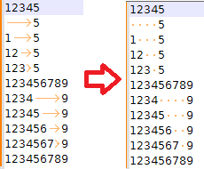

There are three main dialogs for editing preferences and other user-defined settings: Preferences, Style Configurator and Shortcut Mapper. The Shortcut Mapper is a list of keyboard shortcuts to everything that can have one in Notepad++. Style Configurator allows changing the visual appearance of anything that has a color or a font. The Preferences dialog manages most other user-settings. While there are various aspects in Notepad++ that are not configurable, you may not even notice them.
For settings not covered by the three main dialogs, there are other toggles and settings which can be found in various dialogs, menus, and configuration files.
As noted in the Configuration Files documentation, Notepad++ writes the configuration files when it exits, which means that, when you make a change using Notepad++ menus and dialogs described below, your change will not be written to the configuration file until Notepad++ exits.
Preferences
For the descriptions below, if it’s a checkbox ☐, the description applies if the checkbox is checked. For options where the opposite behavior might not be obvious, it may also explicitly describe what the unchecked behavior is. (Checkbox states will be referred to as checked for ☑, unchecked for ☐, and disabled when it’s greyed out so that you cannot toggle the state of the checkbox, and enabled if the grey has been removed.)
General
These affect the user interface (localization, toolbar, tab bar, and more).
- Localization:
- [pulldown]: Set the language for the Notepad++ user interface.
- This copies one of the XML files from the
localization\folder tonativeLang.xml. - To make changes to your localization, edit the language file
localization\<languagename>.xml, as per the instructions in the Binary Translation section. - NOTE: After making changes to the XML file in the
localizationdirectory, or after upgrading to a new version of Notepad++, you need to refresh thenativeLang.xml: use the Localization drop-down to change the Localization to another language then change it back immediately to your preferred language, or skip the “another language” step and just click on the preferred language – either way ends up with copying the file tonativeLang.xmland immediately updating Notepad++’s text for menus and dialogs. (Unlike many configuration files, exiting Notepad++ and restarting the application will not bring in the new settings from an editedlocalization\<languagename>.xml; you must re-choose the desired Localization for the changes to be applied.) - NOTE: After changing the Localization in this Preferences dialog, certain translatable strings, like the tooltip/hover text in dialog boxes, will not refresh until Notepad++ is restarted. If it ever looks like your Localization didn’t fully activate, try exiting all instances of Notepad++ then restarting the application.
- This copies one of the XML files from the
- [pulldown]: Set the language for the Notepad++ user interface.
- Status bar: There will be a Status Bar along the bottom of the Notepad++ window, showing file type, caret location, line-ending style, encoding, and INS/DEL mode.
☐ Hide: The status bar will be hidden
- Toolbar:
☐ Hide: The icon-based toolbar will be hidden.- There is a radio-button set of choices for the icons (updated v8.0.0):
Fluent UI: small: Uses small versions of the Fluent UI icons.Fluent UI: large: Uses large versions of the Fluent UI icons.Filled Fluent UI: small: Uses small versions of the Fluent UI icons, in a filled (or reverse-video) style.Filled Fluent UI: large: Uses large versions of the Fluent UI icons, in a filled (or reverse-video) style.Standard icons: small: These are the small version of the traditional (pre-v8.0.0) icons.
- Document List Panel: (This section removed in v8.1.5.)
☐ Disable extension column: Prior to v8.1.5, if checked, the Document List panel will not have the second column showing extensions (instead, the extension will be part of the Name column); in v8.1.5, this is controlled by right-clicking in the headers of the Document List panel.☐ Show: Prior to v8.1.3, this checkmark would toggle the Document List panel; in v8.1.3 and after, this is now controlled by the View menu’s “Document List” entry.
- Tab Bar:
☐ Hide: The tab bar for the open files will not be visible.☐ Multi-line: If there are enough tabs, they will wrap to a second line.☐ Vertical: Have the tabs on their side on the left, rather than along the top.☐ Reduce: Make the tab bar vertical region and font size smaller.☐ Alternate icons: Change the “saved”/“edited”/“read-only” icons from blue/red/grey disk-icons to checkmark/pencil/lock symbols, respectively- The alternate icons option is designed to improve the user experience for visually-impaired users, and any who prefer different symbols rather than different colors to distinguish the status of each file.
- Note: In Dark Mode, the “saved” symbol (either the blue disk or the green checkmark) will not be shown; the “edited” and “read-only” icons will be.
☐ Lock (no drag and drop): Prevent the reordering of tabs by drag-and-drop on the tab bar (unselected, drag-and-drop on the tab bar will reorder tabs).☐ Darken inactive tabs: Change the fill-color on inactive tabs to a darker color.☐ Draw a coloured bar on active tab: Indicate the active tab by adding a colored bar.☐ Show close button on each tab: Add the close button to each tab’s entry on the tab bar.☐ Double click to close document: Allows double-clicking on the tab to close the file.☐ Exit on close the last tab: If the last tab is closed, Notepad++ will exit (unselected, Notepad++ instead has one new file open).
- Menu
☐ Hide menu bar (use Alt or F10 key to toggle): Sets the main menu bar (File, Edit, Search, …) invisible; once invisible, it can be made temporarily visible by using the Alt or F10 key.☐ Hide right shortcuts ＋ ▼ ✕ from the menu bar (Need to restart Notepad++): Makes the ＋ ▼ ✕ resources invisible (new to v8.4.5). Use this if you find the menu bar too “cluttered”, or find those commands redundant.
Editing
These influence editing (carets, code-folding, line wrapping, and more).
- Caret Settings:
Width: [pulldown] Sets the width and shape of the typing caret:1,2,3: Width (in pixels) of the vertical-bar-style typing caret.0: Width of caret is 0 pixels, which means there is no visible caret.Block: The caret will be a full-character-width rectangle; while typing, the caret block will appear where the next character will be typed; while selecting text, the caret block will be on the last character of the selection (so if you have textABC:and select fromAtoC, the caret block will be on theC).Block After: The caret will be a full-character-width rectangle; while typing, the caret block will appear where the next character will be typed; while selecting text, the block will be after the character position of the selection (so if you have textABC:and select fromAtoC, the caret block will be on the:).
Blink Rate: [slider] Adjust the rate at which the caret blinks, faster when moved left (F), slower when moved right (S).
- Line Wrap: Sets how lines will be wrapped (when View > Word Wrap is checked)
☐ Default: Wraps from the last visible column to the first visible column.☐ Aligned: Wraps from the last visible column to the same indent as the start of the unwrapped line.☐ Indent: Wraps from the last visible column to the next level of indent compared to the start of the unwrapped line.
- Current Line Indicator: Determines how the current line will be indicated.
☐ None: No indicator for which line is the current line.☐ Highlight Background: Indicate the current line by highlighting the normal background color with the Settings > Style Configurator > Global Styles > Current line background color style’sBackground colour.☐ Frame: Indicate the current line by drawing a rectangle frame around the text of the current line, using the color defined by Settings > Style Configurator > Global Styles > Current line background color style’sBackground colour, and with the rectangle-line thickness defined by the Width slider.- Width: Use a slider to set the width (in pixels) for the lines of the rectangle frame for the current line.
- (In v8.4 and earlier, this multi-control section was just listed as
☐ Enable current line highlightingin the list of checkboxes, and was the equivalent of☐being None and ☑ being Highlight Background.)
- EOL (CRLF): Changes the rendering of the
CR,LF, andCRLFcharacters when View > Show Symbol > Show End of Line or Show All Characters is checked:- Default: Old behavior (
CRandLFin reverse-video boxes) - Plain Text:
CR,LF, andCRLFlook like normal text. - Custom Color: Opens the Style Configurator dialog to edit Global Styles > EOL custom color
- Default: Old behavior (
- Non-Printing Characters: Changes the rendering of the Non-Printing Characters when View > Show Symbol > Show Non-Printing Characters or Show All Characters is checked:
- Abbreviation: The symbol will use the abbreviation value from this table, such as
NBSPfor the “no-break space”. - Codepoint: The symbol will use the codepoint value from this table, such as
U+00A0for the “no-break space”. - Custom Color: Opens the Style Configurator dialog to edit Global Styles > NPC custom color
- Apply to C0, C1 & Unicode EOL: Applies these Non-Printing Characters settings to the C0 and C1 control codes as well as the Unicode “End of Line” characters for LINE SEPARATOR (U+2028:
LS) and PARAGRAPH SEPARATOR (U+2029:PS)
- Abbreviation: The symbol will use the abbreviation value from this table, such as
☐ Enable smooth font: Enables a font-smoothing algorithm from Windows, which may affect how smooth fonts are on some displays.☐ Enable virtual space: Enables putting the caret beyond the end of the line (new to v8.4.3).☐ Make current level folding/unfolding commands toggleable: Enables the feature that causes the View menu’s Collapse/Uncollapse Current Level commands to both toggle the state of folding for the current level (so doing the command twice will undo the action); when not checkmarked, the Collapse will only cause the current level to fold, and Uncollapse will only cause the current level to unfold (new to v8.4.2).☐ Enable Multi-Editing: Allows multiple selections not necessarily contiguous with each other by usingCtrl+Mouse click on the selection(s). (This option is removed in v8.6 and beyond, becauseCtrl+Mouse multi-editing is now always available.)☐ Enable scrolling beyond last line: Allows you to scroll (with scroll bar or mouse wheel) so that up to a page of blank space after the last line is visible. (When unchecked, scrolling to the end will put the last line of text as the bottom line in the window, when there are more lines of text than are visible in the window.)☐ Keep selection when right-click outside of selection: Prevents right-click from cancelling an active selection.☐ Disable advanced scrolling feature (if you have touchpad problem): designed to help if you have a problem with your touchpad
Dark Mode
The Dark Mode feature (added in v8.0.0) is controlled here.
☐ Dark Mode/☐ Light Mode/☐ Follow Windows: Chooses whether to use Dark Mode, Light Mode, or follow the Windows Dark/Light settings. (Prior to v8.4.8, this was a single☐ Enable Dark Modecheckbox)- When you enable Dark Mode:
- it will change the active theme to your previously-selected Dark mode theme (new to v8.4.8; previously it always switched to
DarkModeDefault) - Reminder: changing the theme does not change your UDL colors, as discussed in the UDL and Themes section. If your UDL was colored to match some other theme, the colors will likely mismatch, and you will need to edit the UDL colors to make it match the DarkModeDefault theme.
- it will change the coloring of the menu bar and toolbar (if visible)
- Note: In v8.0 - v8.1.1, you must exit Notepad++ completely and restart for full Dark Mode. In v8.1.2 and newer, that is no longer necessary.
- it may change your General > Toolbar settings to use one of the Fluent UI icon sets: if you already had a Fluent icon set selected, it will keep it; if you had the Standard icons: small selected, it will change to Fluent UI: small icons. Starting in v8.4.8, it will remember this the next time you switch to Dark Mode.
- When you run in Dark Mode, the saved-file icon will not show up on your Tab Bar, whether or not you have Alternate Icons checked. However, a read-only file or an edited file will still show their icons (either different colored disks, or the lock icon and pencil icon, depending on Alternate Icons setting).
- it will change the active theme to your previously-selected Dark mode theme (new to v8.4.8; previously it always switched to
- When you enable Light Mode:
- it will change the active theme to your previously-selected Light Mode theme (new to v8.4.8; previously it always switched to
Default (stylers.xml)) - Note: prior to v8.4.8, this was true even if you previously had a different theme selected before trying out Dark Mode. In older versions, if you would like a different theme, you will have to manually change to that theme after changing from Dark Mode to Light Mode.
- it will change the coloring of the menu bar and toolbar (if visible)
- Note: You must exit Notepad++ completely and restart in order to get the rest of the UI (like the top title bar) to be fully out of Dark Mode.
- Prior to v8.4.8, it would leave your Toolbar settings with the same icon set as you had when you were in Dark Mode
- it will change the active theme to your previously-selected Light Mode theme (new to v8.4.8; previously it always switched to
- Notepad++ will track Settings > Preferences > General settings for the Tool Bar and Tab Bar separately for Light Mode and Dark Mode, as well as Settings > Style Configurator > Theme to allow you to have different tool bar icons or tab bar settings and themes in the different modes, so you can switch between them without having to manually make those changes (new to v8.4.8)
- When you enable Dark Mode:
- Tones: allow you to change the tone of the Dark Mode (new to v8.1.2)
- Note: Dark Mode Tones affect most of the user interface, including main menus and toolbars and most of the dialogs, as of v8.1.3. (In v8.1.2, the Tones affected the menus and the Find/Replace/Mark dialog, but not the other dialogs.) The menu pulldown controls, as well as Windows-defined dialog boxes like Open and Save, have their colors defined by operating system settings, and Notepad++ Dark Mode settings will not affect them.
☐ Black,☐ Red,☐ Green,☐ Blue,☐ Purple,☐ Cyan,☐ Olive=> The dark color has a hint of that colored tone☐ Customized=> allows you to configure the tones of the individual components of the Dark Mode (even to the point of not being Dark anymore):Top=> choose the color of the menu bar and tool barMenu hot track=> choose the color of the active menu bar entryActive=> choose the color of the active tab on the tab barMain=> choose the color of the inactive tab(s) on the tab bar, as well as background colors for most dialog boxesError=> choose the color for the error indicator on the Incremental Search barText=> choose the color for the menu bar entry names, and other normal text for most dialog boxesDarker text=> choose the color for the darker text for most dialog boxesDisabled text=> choose the color for disabled items in most dialog boxes (often referred to as “greyed out” or “disabled”)Edge=> choose the color for the vertical separator bars on tab bars (in the main window and in dialogs), and other edges (like the boxes around color selectors)Link=> choose the color for link text in dialog boxes (for example the hyperlink URL in the User Defined Languages dialog) (new to v8.1.3)
Margins/Border/Edge
These define the margin style, border width, and edge settings.
- Fold Margin Style: If the active Language lexer allows for code folding, these determine
☐ Simple: Shows a-if that section is not folded, or a+if it is.☐ Arrow: Shows a▼if that section is not folded, or a▶if it is.☐ Circle tree: Shows a⊖with a line to the end of the section if that section is not folded, or a⊕if it is folded.☐ Box tree: Shows a⊟with a line to the end of the section if that section is not folded, or a⊞if it is folded.☐ None: Shows no symbols and hides that column, even for lexers that allow code folding.- The View menu folding commands still work, even when the Folder Margin Style is set to None.
- Border Width
- [number-slider]: sets the width (in pixels) of the border around each view’s text editor; technically, it’s the gap between the light and dark portions of the sunken border, so a width of 0 will still have the light and dark lines for the sunken edge
☐ No edge: will remove the entire border, including the light and dark bars, so it no longer appears sunken
- Vertical Edge Settings
- This will allow one or more vertical edges to be displayed while editing your file, to help with line lengths or positioning text. This edge indicator can either be a vertical line, or a background shading beyond the edge. The color of the line or background shading will be taken from Settings > Style Configurator > Global Styles > Edge Color: Foreground colour.
- Multiple Vertical Edges: There is one box, which accepts zero or more numbers:
- If the box is empty, there are no vertical edges.
- If there is one number ℕ in the box, there will be one vertical edge, after the column for the ℕth character.
- If there is more than one number (separated by whitespace), then there will be a vertical edge at each of the given character columns.
☐ Background mode: The vertical edge is usually a vertical line; if this option is checked, the vertical edge will be indicated by styling the background of the text to the right of the edge.
- Single Vertical Edge: In older versions of Notepad++, there was only a single vertical edge available, with more toggled options:
☐ Show vertical edge: Shows a vertical edge at the specified location, often used to indicate the right margin for manually setting the number of characters per line.☐ Line mode: The vertical edge is indicated by a solid vertical line.☐ Background mode: The vertical edge is indicated by styling the background of the text to the right of the edge.Number of columns: __: Sets where the vertical edge will be, in numbers of columns (characters) from the left edge of the page.
- Line Number:
☐ Display: Shows the line numbers to the left of the text.☐ Dynamic width: The line number display will adjust its width based on the number of digits needed.☐ Constant width: The line number display will have enough width for any line number in the document.
- Padding: (new to v8.0.0)
- Left will add N pixels of padding between the left edge of the editor pane and the actual text (this is beyond the space allocated for the line numbering, and beyond the space allocated for the folding column). A bigger number leaves more of a gap, and thus less room for actual text.
- Right will add N pixels of padding between the right edge of the editor pane and the actual text. A bigger number leaves more of a gap, and thus less room for actual text.
- The Distraction Free setting changes the borders when Distraction Free Mode is active; a bigger number means more of the screen width is allocated to distraction free text, and a smaller number means less of the screen width is allocated to distraction free text.
☐ Display Change History: Shows a narrow column with a color to indicate lines that have been changed (orange), or lines that were changed in this session but have been saved (green), or changes that have been undone since the last change (light blue/green). The background of this margin is set by the background color of the Global Styles > Change History Margin☐ Display bookmark: Adds an additional margin to the left of the text editing area, to show a large shaded circle next to all lines that contain a bookmark, and green arrow symbols that bracket a range of hidden lines.
New Document
These define properties of new documents (end-of-line format, encoding, and syntax language).
- Format (Line ending):
Windows (CR LF)/Unix (LF)/Macintosh (CR): Newly-created files will use the normal Windows-style line ending, Unix/Linux/*nix-style line ending, or old Mac-style line ending. (Please note that modern MacOS X uses Unix-style line endings.)
- Encoding
ANSI: Characters are represented by a single 8-bit byte, and there are only 256 available code points.UTF-8: This can encode any of the Unicode characters; it uses a single 8-bit byte for codepoints under 128, and two or more bytes for other characters.☐ Apply to opened ANSI files: If you open an ANSI file, this allows it to be “upgraded” to UTF-8.
UTF-8 with BOM: This is the same as UTF-8 encoding, but saves the file with an extra Unicode character U+FEFF (which is encoded as 3 bytes in the file), which some applications use as an indication that it’s a UTF-8 file.UTF-16 Big Endian with BOM: This encodes characters (even those with codepoints under 128) with exactly two bytes. “Big Endian” refers to the order the two bytes will be written to disk (with most-signficant byte first) (Prior to v8.0.0, it was shown asUCS-2).UTF-16 Little Endian with BOM: This encodes characters (even those with codepoints under 128) with exactly two bytes. “Little Endian” refers to the order the two bytes will be written to disk (with least-signficant byte first) (Prior to v8.0.0, it was shown asUCS-2).- The final drop-down allows picking one of the old-style character sets (similar to using the main Notepad++ menu to select Encoding > character sets …).
- Note: The MISC > Autodetect character encoding option will also affect Encoding of existing files.
- Default Language: This pulldown sets whether new files will apply the styling for Normal Text, or use one of the programming-language syntax highlighting rules. User Defined Languages cannot be selected as the Default Language. The Default Language will be applied when a new file is created, and also when an existing file is opened whose type cannot be determined through the file extension or other means.
☐ Always open a new document in addition at startup: With this checkmarked, Notepad++ will always open a new blank document when you start Notepad++, in addition to any active session or files from the command-line (new to v8.5.4).
Default Directory
These affect open and save operations.
- Default Directory:
Follow current document: Open/save dialogs will default to the current directory for the current file.Remember last used directory: Open/save dialogs will remember the last directory you used in the dialog on subsequent uses of the dialogs (regardless of where the current file is located). Note: The last used directory will only be updated when the Open or Save option is selected; if you Cancel or escape out of dialog, the last used directory will not be updated and will keep its previous value.- In older versions, the last used directory is not remembered across runs of Notepad++: If you restart Notepad++, when you first initiate a Save As, it will prompt with the directory the
notepad++.exefile is in. But starting in v8.5.5, the active session file actually tracks that directory.
- In older versions, the last used directory is not remembered across runs of Notepad++: If you restart Notepad++, when you first initiate a Save As, it will prompt with the directory the
___ ...: this entry box with no label allows you to browse to a default directory, and all open/save dialogs will start in that directory
☐ Open all files of folder instead of launching Folder as Workspace on folder dropping: When checked, if you drag a folder from a Windows Explorer window, Notepad++ will open all the files individually; when unchecked, Notepad++ will use the Folder as Workspace feature when you drag the folder into Notepad++.
Recent Files History
These change how the list of recent files is displayed in the File menu.
☐ Don't check at launch time: Will skip checking whether files in the Recent Files History list exist at launch time.- This is useful if you have files on a network drive which intermittently isn’t visible, and want files to remain in the Recent Files History list.
- This is also useful if you like knowing what files were previously edited, even after you’ve deleted those files from the folder.
Max number of entries: Show the n most recent files in the list.☐ In Submenu: Will show the recent files in a “Recent Files” submenu of the File menu, rather than directly in the File menu.☐ Only File Name: Will show just the file name, without the drive or path.☐ Full File Name Path: Will show the full path, including drive, path, and file name.☐ Customize Maximum Length: Will only list the first n characters from the full file path.
Note: Please understand that the Recent Files History shows the history of files recently closed, not recently opened.
File Association
This allows associating certain file types to be always opened (by Windows double-click, and similar) by Notepad++.
Select the name of the filetype in the left column; select one of the extensions in the middle column; use the right arrow → to add the extension to the Registered Extensions list on the right. (You can only do one extension at a time.)
To unregister an extension, click it in the right column, and use the left arrow ← to remove it from the Registered Extensions column.
Note: For this section to work, please run Notepad++ in Administrator mode, since it is modifying the registry.
Language
This affects the display of the main Language menu, and also affects the per-language tab settings.
- Language Menu:
☐ Make language menu compactwill make submenus for languages that start with the same letter.- Under normal circumstances, this makes the list of items in the Language menu much shorter: the standard 80+ languages will be reduced to about 20 submenus and a few standalone Language menu entries.
- For example, Perl and Python syntax highlighting would be selected through the Language > P submenu, rather than directly from the language menu.
Available items ⇄ Disabled items: by moving a language into theDisabled itemscolumn, it will no longer show up in the Language menu list.- If you have moved items to Disabled Items and have checked
☑ Make language menu compact, there may end up being empty letter-based subfolders in the Language Menu.
- If you have moved items to Disabled Items and have checked
Tab settings:
[Default]sets the tab behavior for the “default” condition.normalsets the tab behavior for plain text.- Other selections will choose for which syntax-language the tab settings are being changed.
☐ Use default value: Not visible on the[Default]selection. For other languages, will use the values from the[Default]selection for that particular language.Tab size : ___: sets the width of the tab stop. (For example, the picture below shows a tab size of 4, so the tab stops will be at 1, 5, 9. and so on.)☐ Replace by space: When set, hitting the Tab key will insert up to that number of space (U+0020) characters, such that the next character will be at the next tab stop; when not set, the Tab key will insert the literal ASCII Tab (U+0009) character.- This setting affects only what is typed after the setting is changed; turning this option on does not automatically change Tab characters that are already in your document. To convert already-existing Tab characters, you may use a search-and-replace or use the built-in Edit > Blank Operations commands.
Example: When
☐ Replace by spaceis not set, then hitting the Tab key will insert the single Tab character in the file which will be displayed as a gap wide enough to align the text to the next tab stop, as shown on the left of the image. When☑ Replace by spaceis set, hitting the Tab key it will insert enough literal space characters so that the next character (after the spaces) will be aligned at the next tab stop, as shown in the right of the image.
The image has View > Show Symbol > Show Space and Tab enabled to make the tab-characters vs space characters obvious.
☐ Treat backslash as escape character for SQL: This affects the Language > SQL handling of the\backslash character.
Highlighting
Affects the highlighting of the selected text, which is referred to by the menu entries as the “Token”.
- Style All Occurrences of Token (previously Mark All)
- Note: This section of the preferences was renamed with v8.1.4; it was known as Mark All in v8.0 - v8.1.3.
☐ Match case: Mark All will be case-sensitive.☐ Match whole word only: Mark All will require a whole “word” (sequence of “word characters”, as defined in the Delimiter preferences).- This setting section applies to the Search menu’s Mark All submenu entries, and the equivalent right-click Context Menu’s Style all occurrences of token submenu entries, for applying “Style Tokens” to specific text.
- Smart Highlighting
☐ Enable: If you select a piece of text, Smart Highlighting will color all matching pieces of text. It will use the style defined in Style Configurator > Global Styles > Smart Highlighting.☐ Highlight another view: Smart Highlighting will also apply to the other “view” (when you have documents open in both of Notepad++ view panes).Matching: ☐ Match case: Smart Highlighting will be case-sensitive.Matching: ☐ Match whole word only: Smart Highlighting will require a whole “word” (sequence of “word characters”, as defined in the Delimiter preferences).Matching: ☐ Use Find dialog settings
- Highlight Matching Tags
☐ Enable: In HTML/XML files, clicking in or highlighting in an opening or closing tag (between the angle brackets) will highlight both the opening and closing tag. It will use the style defined in Style Configurator > Global Styles > Tags match highlighting.☐ Highlight tag attributes: Any attributes inside the active tag will be highlighted using the style defined in Style Configurator > Global Styles > Tags attribute.☐ Highlight comment/php/asp zone
Affects how the text is formatted when sent to the printer.
☐ Print line number: Will include line numbers when printed.- Colour Options
☐ WYSIWYG: What you see is what you get. The same colors you see in the editor will apply to printing.☐ Invert: Black prints as white, light color prints as dark, and vice versa.☐ Black on White: Prints black text on white background, no highlighting.☐ No background colour: Same as WYSIWYG, except no background color is printed.
- Margin Setting (Unit:mm): Define the page margins, in mm.
- Header and Footer: Define what will be printed in each page’s header and footer sections.
- Click in one of the
Left part,Middle part, orRight partfor header or footer; - Either type in text for literal text, or use the
Variable:drop-down andAddbutton to add one of the variables at the current caret position:- Add Full file name path ⇒
$(FULL_CURRENT_PATH)in the input box ⇒ will print something likeC:\path\to\file.txt - Add File name ⇒
$(FILE_NAME)in the input box ⇒ will print something likefile.txt - Add File directory ⇒
$(CURRENT_DIRECTORY)in the input box ⇒ will print something likeC:\path\to - Add Page ⇒
$(CURRENT_PRINTING_PAGE)in the input box ⇒ will print the current page number. (Sorry, there is no total-number-of-pages variable, so you cannot dopage # of #.) - Add Short date format ⇒
$(SHORT_DATE)in the input box ⇒ will print something likem/dd/yyyy(possibly locale-dependent) - Add Long date format ⇒
$(LONG_DATE)in the input box ⇒ will print something likeDay, Month ##, YYYY(possibly locale-dependent) - Add Time ⇒
$(TIME)in the input box ⇒ will print something likeHH:MM AM(possibly locale-dependent)
- Add Full file name path ⇒
- Font pulldown: Use selected font for the header or footer (if left blank, use document’s default font).
- Font size pulldown: Define font size for header or footer.
- Click in one of the
Searching
Affects the operations found in the Find dialog tabs.
- When Find Dialog is Invoked
Minimum Size for Auto-Checking 'In selection': _____: Integer value used for deciding whether to automatically checkmark ☐ In Selection. (new to v8.5.8)- When a search function is initiated while a stream selection is active in the editor, the ☐ In Selection option will become automatically checkmarked if this setting is not
0and the number of characters in the selection is above the specified value. Additionally, if this setting is non-zero, the ☐ In selection option will be automatically cleared when a search is initiated with no stream selection active in the editor. When the setting is0, the user will entirely control the state of the ☐ In selection checkbox (that is, the program won’t change the check state at all). - The default value is
1024characters. - Allowed values:
0characters is the smallest integer value allowed.1024is the largest integer value allowed. If you enter an integer value greater than1024then the field value will change to1024immediately. If you attempt to enter a non-digit character (like a decimal point or a letter), the field will pop up an error message indicating that only digits are allowed to be entered.
- When a search function is initiated while a stream selection is active in the editor, the ☐ In Selection option will become automatically checkmarked if this setting is not
☐ Fill Find Field with Selected Text: When checkmarked, invoking the Find Dialog will fill the Find What field with the currently-selected text; when not checkmarked, invoking the Find Dialog will not change the contents of the Find What field (reworded in v8.4.5; previously wasDon't fill find field...)☐ Select Word Under Caret when Nothing Selected: When checkmarked, invoking the Find Dialog with no active selection will fill the Find What field with the text under the caret; when not checkmarked, invoking the Find Dialog with no active selection will not change the contents of the Find What field; if the option above is not checkmarked, this option will be un-checkmarked and cannot be toggled. (new to v8.4.5)
- Note: The fill will only occur if the size of the active selection is 1024 characters or less. This is a fixed value and is unrelated to the
Minimum Size for Auto-Checking 'In selection'value.
☐ Use Monospaced font in Find dialog (Need to restart Notepad++): Changes the font from standard proportional font to a monospaced font in the text boxes in the Find dialog; requires restarting Notepad++ to change.☐ Find dialog remains open after search that outputs to results window: Successful file-level searches cause the Find window to close; selecting this option keeps the window open always.☐ Confirm Replace All in All Opened Documents: When checked, Replace All in All Opened Documents will ask for confirmation.☐ Replace: Don't move to the following occurrence: When checked and a match is selected, Replace will make the indicated substitution, but then will NOT automatically move the caret to the subsequent match (added v8.0.0).☐ Search Result window: show only one entry per found line: When checked, the Search Results Window will only list each line once, even if the line has multiple matches; when unchecked, it will behave like older versions and list each line once for each match on that line (added v8.4.3).
Backup
Defines whether or not to perform saving sessions, periodic backup, and backup on save.
- Session snapshot and periodic backup
☐ Remember current session for next launch: The current session is the current list of open files. The next time you run Notepad++, it will open with that same list of files.☐ Enable session snapshot and periodic backup: This will auto-save your changed file once every N seconds to the listed directory (default to%AppData%\Notepad++\backup\).- It is not possible to select this option without
☐ Remember current session ...also being active. - This is also how you enable Notepad++ to remember unsaved changes.
- This will allow you to exit Notepad++ and resume, remembering changes to files that hadn’t been intentionally saved.
- When you exit Notepad++ with unsaved changes, Notepad++ will not ask you to save changes. It will just keep the periodic backup file, and reload from there rather than from the normal disk location for the file.
- If you want Notepad++ to ask you to save edited files every time you close the file or exit Notepad++, do not enable this option.
- This is not a long-term backup option.
- Every time you do a manual save, or every time you close the file while leaving Notepad++ open, this periodic backup of the file will be deleted.
- If there is a Notepad++ crash or Windows crash, it is possible for you to lose data.
- Periodic Backup file naming:
- For named files (existing or saved files that have recent edits) the name of the backup file (in the listed directory) is
filename.ext@yyyy-mm-dd_hhmmss, wherefilename.extis from the main file. As soon as you manually save the file (so it’s written to disk in the real location), the backup goes away, because the purpose of the periodic backup is to save a copy of a file that you’ve edited but not saved. The timestamp part of the periodic-backup-name is based on the first automatic save after the last manual save. Example: if you saved a file at 8:10:00am, the backup would go away; then, at 8:12:30am, you type something but don’t save, so sometime within N seconds of that (8:12:30+N) it will periodic-backup-save and make a file with a timestamp about then – something likefilename.ext@2021-06-23_081234. If you left for a while (or exited Notepad++ and reloaded) and came back at 12:34:56pm and typed another character, it would do it’s periodic-backup-save on that file again so the last-modified time of the backup would be updated), but the name of the periodic-backup file will remain the same. - For unnamed files (new files that haven’t been saved) the name of the backup file (in the listed directory) is
new NNN@yyyy-mm-dd_hhmmss, wherenew NNNmatches the name listed in the tab title. Sincenew NNNfiles are by definition not manually saved, the timestamp in the periodic-backup filename is based on when it did the first periodic-backup-save for that unnamed file.
- For named files (existing or saved files that have recent edits) the name of the backup file (in the listed directory) is
- It is not possible to select this option without
☐ Remember inaccessible files from past session: Changes the behavior of how Notepad++ handles files that don’t seem to exist when Notepad++ loads the session. With the option checkmarked, sessions can remember files even if they don’t exist any more, based on your reply to a dialog box; if it is not checkmarked, sessions will not remember missing files. There is more about this behavior documented in Sessions > Inaccessible Files. (New to v8.6.)
- Backup on save
☐ None: No additional backup will be performed when the file is saved.☐ Simple backup: It will save a copy of the file, with the same name and extension, but with.bakappended.- If the
Custom Backup Directoryis turned on and defined, it will save the simple backup in that defined directory; for example, if it is set asC:\myCustomBackupFolder\, then the fileC:\path\to\file.txtwill save its simple backup asC:\myCustomBackupFolder\file.txt.bak - Note: If you are editing two files with the same name which are in separate directories (like
C:\path\a.txtandC:\other\a.txt), the Custom Backup directory will only contain one backup file (a.txt.bak), with the contents of whichever file was saved most recently. Turning offCustom Backup Directorywill eliminate this problem, because then the backup of a file will reside in the same directory as the original, so there will not be name conflicts on the backups. - If the
Custom Backup Directoryis not turned on and defined, it will save the simple backup in the same directory as the original file; for example, savingC:\path\to\file.txtwill save its simple backup asC:\path\to\file.txt.bak.
- If the
☐ Verbose backup: It will save a copy of the file, with a date-and-timestamp added to the filename (in the formatyyyy-mm-dd_hhmmss) as well as the.bakextension.- If the
Custom Backup Directoryis turned on and defined, it will save it in that directory; for example, if it is set asC:\myCustomBackupFolder\, then the fileC:\path\to\file.txt filewould be backed up asC:\myCustomBackupFolder\file.txt.2021-06-28_073650.bak - Note: If you are editing multiple files with the same name which are in separate directories (like
C:\path\a.txtandC:\other\a.txt), the Custom Backup directory will contain verbose backup files for nearly all individual saves; however, if it happens that both files were saved within the same second (by being really fast, or using Save All), then only one backup file will exist with that timestamp (a.txt.2021-06-28-073722.bak), with the contents of whichever file happened to be saved last in that second. Turning offCustom Backup Directorywill eliminate this problem, because then the backups of a file will reside in the same directory as the original, so there will not be name conflicts on the backups. - If the
Custom Backup Directoryis not turned on and defined, it will save it in the.\nppBackup\subdirectory of the file’s current directory; for example, savingC:\path\to\file.txtwill create a backup calledC:\path\to\nppBackup\file.txt.2021-06-28_073650.bak
- If the
☐ Custom Backup Directory: Leave blank to put the backup in the same directory as the file; set to a directory to have all files backed up to one directory.
Important backup information
This bears repeating: with ☐ Enable session snapshot and periodic backup on, Notepad++ will allow you to exit with unsaved changes without asking you to save, and unless an error occurs, the next time you run Notepad++, your unsaved changes will still be there. Notepad++ has been coded in such a way as to make this periodic backup as reliable as possible. However, there are crashes and errors possible outside of Notepad++’s control, and there is no guarantee or warranty that your unsaved data will remain after a crash or other major system error. Once you manually save, the periodic backup is deleted. The builtin periodic backup should not be considered a long-term backup option, and unsaved changes in files should always be considered as volatile and unsaved.
Backup on save is the long-term backup solution built into Notepad++: Simple backup will just keep one copy that matches the most recent save of the file; verbose backup keeps multiple copies with date stamps. The location of backup-on-save backup files is described above.
If you are editing mission-critical files: Your data is your responsibility. It is recommended to always use dedicated backup software in addition to any periodic-backup or backup-on-save features you have enabled. You may want to look into the AutoSave plugin (available through Plugins > Plugins Admin) for better control of automated-saving while changes are being made – though if you install that plugin, understand that you have to configure it before it will automatically save your file(s) for you. Using cloud-based folders may provide backup and/or revision history. A dedicated revision control system, such as Git or Subversion, will provide control over your version history.
Auto-Completion
Sets options for auto-completion of text, including word completion, syntax completion, and automatically pairing certain punctuation pairs and html/xml tags.
- Auto-Completion
☐ Enable auto-completion on each input: A dropdown selection will appear as you type; arrow keys will select various choices, TAB or ENTER will accept a choice, ESC will cancel auto-completion.☐ Function completion: Will auto-complete function names only, based on the keywords in the active auto-completion file.☐ Word completion: Will auto-complete words only, based on words that already exist in the current file.☐ Function and word completion: Will auto-complete both function names and words.
From _n_th character: Must type at least n characters before auto-completion activates.- If
☐ Enable auto-completion on each inputis unchecked, the _n_th character entry will be disabled (greyed out).
- If
☐ Ignore numbers: Won’t try to auto-complete when typing numbers.- Insert Selection: v8.2.1 added a new section.
☐ TAB: Toggles whether TAB will accept your choice.☐ ENTER: Toggles whether ENTER will accept your choice.- v8.2 and earlier behaved as if both have checkmarks; v8.2.1 and later defaults to having TAB checkmarked but ENTER not checkmarked, so the default behavior has changed.
☐ Make auto-completion list brief: when unchecked, once the auto-completion list pops up, the list will stay the same size even as you type additional letters, but the selection will move to the first word that matches all the characters typed; when checked, as you type more characters, the auto-completion list will shrink to only match words that match all the typed characters (new to v8.5; prior to v8.5, the list never shrank).- Example: If you have
abc,acb, andaddin your auto-completion list and start auto-completion from the 1st character, when you typea, all three words will appear in the auto-completion list. With this option unchecked (or in earlier versions of Notepad++), typingdnext will just move the selection toadd, but all three words will still be shown; with this option checked, once you type thed, onlyaddwill be shown in the list.
- Example: If you have
☐ Function parameters hint on input: For applicable programming languages, will provide hints on what to type in a function parameter list.- Please note that if you use Edit > Auto-Completion > … menu entries to activate the completion features, you can force function or word or parameter completion, even when those checkboxes are turned off in the settings, and even if there aren’t enough characters typed to trigger the auto-completion.
- Auto-Insert
- Will automatically insert the closing item for any of the checked pairs, or the three manually-chosen matched pairs.
☐ ()☐ []☐ {}☐ ""☐ ''☐ html/xml close tagMatched pair [1,2,3]: __ __: Define the open and close character(s) for three user-defined pairs.
- Will automatically insert the closing item for any of the checked pairs, or the three manually-chosen matched pairs.
☐ Auto-indent: When making a new line, automatically indent (following TAB or space settings for the active Language) based on the indent of the previous line.
Multi-Instance and Date
The Multi-Instance settings determine whether multiple instances of Notepad++ can be run simultaneously.
☐ Default (mono-instance): Every time you open a file from Windows, it will go into the single Notepad++ instance. If you open a session file while Notepad++ is already open, the files from that session will be opened in addition to the files you already have open.☐ Always in multi-instance mode: Every time you open a file from Windows, it will open a new instance of Notepad++.☐ Open session in a new instance (and save session automatically on exit): Each session will open in a new instance, but multiple files can be opened in each session. “Opening a session” can be done either by using File > Load session…, or (if you have set the MISC > Session File ext) by opening a file with that extension. From Notepad++ v8.2, the loaded session in the new instance will be saved automatically while exiting the instance, if this option is set.
WARNING: If you select anything other than Default (mono-instance), changed settings in one instance will not influence the settings in the other instance, and only the changed settings in the last instance closed will be saved to disk.
The Panel State and [-nosession] checkboxes allow panel state to be remembered even when running in multi-instance mode or with -nosession (added v8.4.9). Normally, when run with -nosession, or when subsequent instances are run, all panels start as “off” (because the new instance ignores the session file). With each panel type that is checkmarked in these settings, Notepad++ will “remember” whether that panel was open in the previous session, even when the session is otherwise being ignored. The panels available are Clipboard History, Document List, Character Panel, Folder as Workspace, Project Panels, Document Map, Function List, and a catchall for all Plugin panels. For changes to these settings to take effect, Notepad++ must be restarted.
The Customize insert Date Time settings will allow you to customize the time format inserted by Edit > Insert > Date Time (customized).
☐ Reverse default date time order (short & long formats): If checked, the short and long formats will insert the date then the time; if unchecked, the short and long formats will insert the time then the date.Custom Format: Enter in the format string that will define the date and time display desired when inserting the customized time.
| Format | Description | Example |
|---|---|---|
| — | Day | — |
| d | Day of the month as digits without leading zeros for single-digit days | 1, 31 |
| dd | Day of the month as digits with leading zeros for single-digit days | 01, 31 |
| ddd | Abbreviated day of the week | Mon |
| dddd | Day of the week | Monday |
| — | Month | — |
| M | Month as digits without leading zeros for single-digit months | 1 |
| MM | Month as digits with leading zeros for single-digit months | 01 |
| MMM | Abbreviated month | Nov |
| MMMM | Full month | November |
| — | Year | — |
| y | Year represented only by the last digit | 9 |
| yy | Year represented only by the last two digits - A leading zero is added for single-digit years. | 99 |
| yyyy | Year represented by a full four or five digits | 1999 |
| g, gg | Period/era string formatted | B.C., A.D. |
| — | Time | — |
| h | Hours with no leading zero for single-digit hours; 12-hour clock | 1, 11 |
| hh | Hours with leading zero for single-digit hours; 12-hour clock | 01, 11 |
| H | Hours with no leading zero for single-digit hours; 24-hour clock | 1, 23 |
| HH | Hours with leading zero for single-digit hours; 24-hour clock | 01, 23 |
| m | Minutes with no leading zero for single-digit minutes | 9, 59 |
| mm | Minutes with leading zero for single-digit minutes | 09, 59 |
| s | Seconds with no leading zero for single-digit seconds | 9, 59 |
| ss | Seconds with leading zero for single-digit seconds | 09, 59 |
| t | One character time marker string | A, P |
| tt | Multi-character time marker string | AM, PM |
Delimiter
Sets the characters that are considered part of a “word” for quick selections using double-click, Smart Highlighting, or the “match whole word only” in a normal search expression. It is also used for auto-completion. This setting does not affect a regular expression’s interpretation of a word character or word boundary.
- Word character list
☐ Use default Word character list as it is: For Smart Highlighting (see above) or the Normal search mode in the Find and Replace dialogs, will use the normal alphanumeric rules for determining what constitutes a word for “Match Whole Word Only”.- The default “word characters” include anything that Unicode considers alphanumeric, plus the underscore “_” character.
- Includes: Standard Latin characters, accented characters, letter-like symbols, superscript digits, and enclosed (circled) digits
- Excludes: Punctuation, mathematical operators, box drawing, arrows, emoji, or other such symbols
- The default “word characters” include anything that Unicode considers alphanumeric, plus the underscore “_” character.
☐ Add your character as part of word: Sometimes, the default “word character list” may not be sufficient to you; if you want other characters to be considered in “whole word only”, add them here.- The value should be a string consisting of all the additional characters you would like to be included as a “word character”.
- Spaces are liable to cause problems, and are not recommended to be present in this entry. If you try to add a space, the dialog box will show a warning message.
- If you have characters in this box, then later come and delete them all out, it will not fully stop using those extra characters as delimiters until you switch the preference back to using the default word character list, or restart Notepad++.
- Delimiter selection settings
- If you define open and close characters, Ctrl + MouseDoubleClick will select everything inside that delimiter pair
☐ Allow on several lines: Ctrl + MouseDoubleClick will work across multiple lines, instead of just on a single line
Performance
Some features may slow performance in large files. These features can be auto-disabled on opening a large file, using the settings in this section. (This customization section is new to v8.4.7. In previous versions, Notepad++ just quietly deactivated syntax highlighting on any files greater than 200MB, without user configurability.)
NOTE: 1. Modifying options here requires you to re-open currently opened large files to get proper behavior. 2. If “Deactivate Word Wrap globally” is checked and you open a large file, “Word Wrap” will be disabled for all files. You can re-enable it via View > Word Wrap.
- Large File Restriction
?: This box provides some helpful hover text (the introductory paragraphs in this manual section were derived from this hover text).☐ Enable Large File Restriction (no syntax highlighting): When checked, there will be no syntax highlighting for large files, and the other options below will come into effect; when unchecked, there will be no Large File Restrictions active, and Notepad++ will apply all syntax highlighting and other features, even on large files, despite any performance losses.Define Large File Size: ___ MB: Put in “size limit” which will trigger Large File Restrictions.☐ Deactivate Word Wrap globally: When checked, Notepad++ will deactivate the Word Wrap feature for all files (whether large or small); when unchecked, Word Wrap features will not be affected when a large file is open.☐ Allow Auto-completion: When checked, Auto-completion will still be available for large files. When unchecked, large files will not allow Auto-completion.☐ Allow Smart Highlighting: When checked, Smart Highlighting will still be available for large files. When unchecked, large files will not allow Smart Highlighting.☐ Allow Brace Match: When checked, the Brace Match feature will still be available for large files. When unchecked, large files will not allow Brace Match.☐ Allow URL Clickable Link: When checked, text that looks like a URL will be presented as a clickable link. When unchecked, large files will not turn URL text into clickable links.
Cloud & Link
Settings on cloud: Allows saving your settings to the cloud instead of in the normal
%AppData%or program-install folders. More information can be found in the Config files location.☐ No Cloud: Saves settings in the normal location.☐ Set your cloud location path here: Settings will go in the given directory, which is assumed to be in a folder that’s synced to your cloud-provider.
Clickable Link Settings: Affects behavior of URLs in your document.
☐ Enable: Text that appears to be a URL will allow you to double-click to open that URL in your default browser. When you hover over the URL, it will change to the style defined in Style Configurator > Global Styles > URL hovered.☐ No underline: Will remove the underline normally present on a link.☐ Enable fullbox mode: The background color and foreground color will change on hover-over; when unchecked, just the foreground color will change.URI Customized Schemes: Space-separated list of additional schemes to recognize as URLs. The schemesftp:// http:// https:// mailto: file://are always recognized, no matter what the contents of this setting, so they need not be included in this entry box.
Search Engine
Set your search engine for “Search on Internet” command (found in the Edit > On Selection menu, or in the right-click context menu). It will search for the word under the caret (or for the whole selection, if a selection is made).
If you want to specify a search engine not listed, type the full URL, with the text $(CURRENT_WORD) as the placeholder for the search term (as shown in the example in the Preferences dialog box).
MISC.
A variety of settings that didn’t fit elsewhere
- Document Switcher
☐ Enable: HittingCtrl+TABwill allow you to easily switch through all the open documents.☐ Enable MRU behavior: It will default to selecting the most recently used file (or “MRU”, for short) in theCtrl+TABlist.- When checkmarked:
Ctrl+TABwill take you to the most recently used document. Also, if you close the active tab, it will activate the most recently used tab. - When not checkmarked:
Ctrl+TABwill take you to the next tab in the Document Switcher menu (the tab to the right). Also, if you close the active tab, it will activate the next tab in the Document Switcher menu (the tab to the right) or the last tab in the Document Switcher menu if the closed tab used to be the last tab.
- When checkmarked:
- Document Peeker
☐ Peek on tab: If you hover over an inactive tab, it will give you a tiny “peek” at the document (a ultra-tiny font preview, similar to the document map), in a small popup near the tab bar.☐ Peek on document map: If you hover over an inactive tab, it will change the Document Map (View > Document Map) pane to show the preview of that tab, rather than of the active document.
- File Status Auto-Detection
- [pulldown]
Enable: For the active file only, will check periodically to see if the file has been updated on disk, and will prompt to ask if you want to reload the file from the disk, or keep the version that’s currently in Notepad++.Enable for all open files: For all active files, check periodically to see if the file has been updated on disk.Disable: Will not check to see if the file has been updated on disk.
☐ Update silently: Instead of prompting, will automatically reload the file from disk.☐ Scroll to the last line after update: Will scroll to the end of the file after reloading from disk (otherwise, the caret and scrolled-location stays where it was before the update).
- [pulldown]
☐ Enable Notepad++ auto-updater: Will automatically download updates from the official website, once the development team has decided it’s time to push an update to users. If unchecked, you will have to manually download the installer from the official website yourself.☐ Mute all sounds: When unchecked, a sound will provide feedback on certain actions (example: a search action in Find / Replace dialog results in the text not being encountered); when checked, Notepad++ will remain silent for those actions.☐ Autodetect character encoding: When opening a new file, try to algorithmically determine what character encoding should be used. (Other Encoding settings can be found in the New Document tab of the Preferences Dialog.)☐ Minimize to system tray: Place the Notepad++ icon on the system tray (instead of the task bar) when the Notepad++ window is minimized.☐ Show only filename in title bar: Use just the file name (instead of the full path) of the active file in the Notepad++ title bar.☐ Use DirectWrite (May improve rendering special characters, need to restart Notepad++): Enables DirectWrite drawing.- DirectWrite will help in displaying characters even if the active font doesn’t have a glyph.
- The modified rendering may affect the clarity or readability of the characters for some users or systems (for some users, it increases readability; for others, it decreases readability).
- This is not on by default, because it may cause performance issues.
☐ Enable Save All confirm dialog: When the Save All command is issued, will pop up a dialog to confirm you really want to save all: Yes will Save All; No will not save all this time, but will ask again next time; Always yes will save all and will uncheck this preference so that Save All will stop asking for confirmation in the future.Session file ext.: Enter a file extension (without the.). When you open a file with this extension (whether from Windows file associations, or from the Notepad++ File > Open or similar), Notepad++ will treat the file as a session file, and open the files from that session, rather than showing and editing the contents of the file. This will honor the Multi-Instance settings.Workspace file ext.: Enter a file extension (without the.). When you open a file with this extension (whether from Windows file associations, or from the Notepad++ File > Open or similar), Notepad++ will treat the file as a workspace file, and open that workspace, rather than showing and editing the contents of the file. This will honor the Multi-Instance settings.
Style Configurator
The Style Configurator dialog has three regions: Select theme, language and style selection lists, and the style definition.
The “Select theme:” pulldown allows you to select which theme you want. Themes are pre-defined sets of formatting rules, which often try to use a consistent color scheme between languages.
The “Language:” selection list lets you select whether you want to set the formatting for “Global Styles”, or a specific programming language that you want to set the highlighting for. The “Style:” selection list lets you select which highlighting rule to edit for the given language.
On all but “Language: Global Styles”, there will also be a “Default ext.” box, which is an un-editable list of the default file extensions associated with that Language; and the “User ext.” box, where you can add a user-defined list of additional extensions (space separated, don’t use the . in the extension), which says which other extensions you want to apply this language’s formatting to. (Please note that any changes you make in the Style Configurator dialog box for a specific language only applies to that language and only applies to the selected theme: If you add a user-defined extension to a language in the Default (stylers.xml) theme, it will not affect the list of user-defined extensions for that language in any of the other themes.)
Note: There is no specific Language entry called “Normal text” or “Plain text” in the Style Configurator. To edit the colors for a plain text file (like .txt), use the “Global Styles” language and the “Default Style” entry in the “Style:” column.
The right half of the dialog is where you edit the colors and fonts for the selected Language and Style. The title-text for the right side will list which language and style are selected. The Colour Style allows you to choose the Foreground or Background color by clicking on the colored box. You can also make the style’s Foreground or Background color ignored, by right-clicking on the colored box (you’ll see the additional diagonal stripes on the colored box) - in this case the default background/foreground color will be used. The Font Style allows you to pick the font, size, and bold/italic/underline settings. If Font name or Font size are left blank, they will inherit from the Global Styles: Default Style. If you right-click a color, you will see diagonal stripes across the color, indicating it is set to “inherit”, meaning that it will take that color from the Default Style. Under the “Language: Global Styles” with “Style: Global override”, there are also a series of checkboxes for “Enable global xxx”, which will mean that Notepad++ will use the Global override setting for that attribute, rather than using the per-language styling settings for that attribute.
Some language/style combinations (like Perl > INSTRUCTION WORD) will additionally have a list of default keywords (not editable) and user-defined keywords (which allow you to add new keywords to apply this style to).
The Save & Close button will save the settings and close the dialog. The Cancel button will exit the dialog without updating the style settings. The Transparency checkbox will allow you to apply transparency to the Style Configurator dialog box.
Global Styles
Unlike most of the other items listed in the “Languages” column, which are language or file-type specific, the “Global Styles” set the default stylings for all types of documents using the active theme. Except for the “Global override” style, a style for a particular language will override a “Global Style” setting.
Some of these styles apply to the background only, some apply to the foreground only, and some apply to both.
- Global override [background and foreground] ⇒ This style has a series of checkboxes, which allow you to choose which attributes of the override-style will apply to everything; any that are checked will override even the per-language settings; any that are not checked will not use the global-override settings for that attribute.
- Global override takes precedence over any other color or font defined elsewhere, and will mask any per-language settings.
- Unless you want to turn off all syntax highlighting for all the programming languages, you likely don’t want to use the
Global overridesettings. - Do not use this if all you are trying to do is set the color for Normal Text files (
.txt): for those, use theDefault stylebelow.
- Default style [background and foreground] ⇒ This sets the base font and colors for all languages – so any unstyled text will use these settings.
- As described previously,
Default Styleis used to set the color for Normal Text (.txtfiles, and anything else that isn’t highlighted by a lexer). - Also, as described a few paragraphs earlier, the highlighters for specific languages will inherit from this
Default Stylefor things like font and possibly color, if there is no value defined for that language.
- As described previously,
- Indent guideline style [background and foreground] ⇒ If View > Show Symbol > Show Indent Guide is checked, there will be a thin dotted line for every level of indent. The foreground sets the color of the dots; the background sets the color of the non-dot portion.
- Brace highlight style [background and foreground] ⇒ If you have text like
( blah )or[ blah ]or{ blah }and move the caret onto one of the opening or closing parentheses, brackets, or braces, both the opening and closing character in the pair will be highlighted per this style. - Bad brace colour [background and foreground] ⇒ If you have a single unmatched or mismatched parenthesis
(), bracket[], or curly-brace{}, with the caret at that character, it will be highlighted as a “bad brace style” instead of using the “brace highlight style”. - Current line background colour [background only] ⇒ The line containing the active editing caret will be marked using this background style. The “Go to settings” link will take you to Preferences > Editing so you can change Current Line Indicator.
- Selected text colour [background only] ⇒ Selected text will be indicated with this background. If Preferences > Highlighting > Smart Highlighting is checked, the “Smart Highlighting” style (below) will be colored overtop of the “Selected text colour”. If the configuration file
enableSelectFgColor.xmlexists (and you have v8.0.0 or newer), “Selected text colour” will honor the foreground color as well. - Multi-selected text colour [background only] ⇒ Text selected in “multi-select” mode will be indicated with this background. (New to v8.6)
- Caret colour [foreground only] ⇒ This sets the color for the current-text-position caret, which will either be
|for insert mode or_for overwrite mode. The “Go to settings” link will take you to Preferences > Editing so you can change Caret Settings. - Multi-edit carets colour [foreground only] ⇒ This sets the color for the current-text-position caret in multi-selection mode. (New to v8.6)
- Edge colour [foreground only] ⇒ Color for the vertical edge from Preferences > Margins/Border/Edge. If the Vertical Edge Settings are checked as Background Mode, this style’s “foreground” color will be used as the background color for text that’s beyond the edge. The “Go to settings” link will take you to Preferences > Margins/Border/Edge so you can change Vertical Edge Settings.
- Line number margin [background and foreground] ⇒ If Line Number > Display is checked in Preferences > Margins/Border/Edge, this sets the style for those line numbers. The “Go to settings” link will take you to Preferences > Margins/Border/Edge so you can change Line Number settings.
- Bookmark margin [background] ⇒ The background of the Bookmark margin will be set to this color, if the margin is enabled. The “Go to settings” link will take you to Preferences > Margins/Border/Edge so you can change Display Bookmark.
- Change History margin [background] ⇒ The background of the Change History margin will use this color, if the margin is enabled. (new to v8.4.6) The “Go to settings” link will take you to Preferences > Margins/Border/Edge so you can change Display Change History.
- Fold [background and foreground] ⇒ If a given language has folding, this will give the color for the folding symbols (
⊞ ⊟ │ └) when the caret is not inside that folding-area. The “Go to settings” link will take you to Preferences > Margins/Border/Edge so you can change Fold Margin Style. - Fold active [foreground only] ⇒ If a given language has folding, this will give the color for the folding symbols (
⊞ ⊟ │ └) when the caret is inside that folding-area. The “Go to settings” link will take you to Preferences > Margins/Border/Edge so you can change Fold Margin Style. - Fold margin [background and foreground] ⇒ If a given language has folding, this will give the colors for the margin-region; it will be colored with a checkerboard-like pattern (a dense version of
░). The “Go to settings” link will take you to Preferences > Margins/Border/Edge so you can change Fold Margin Style. - White space symbol [foreground only] ⇒ If View > Show Symbol settings have whitespace shown, then the tabs and whitespace symbols will use this foreground color.
- Smart Highlighting [background only] ⇒ If Smart Highlighting is checked and active, this color will be applied to all matches. This background color has approximately 60% transparency compared to other backgrounds also applied on the same text, so the exact color seen will depend on other styles for this text, combined with this setting. (For example, if you have a highlight of green RGB=[0,255,0], with a white RGB=[255,255,255] background, the actual color will be RGB=[155,255,155].) The “Go to settings” link will take you to Preferences > Highlighting so you can change Smart Highlighting.
- Find Mark Style [background only] ⇒ If you have used the Search > Mark dialog to mark text, this style will be applied to the background. Like the “Smart Highlighting” style, this background has about 60% transparency, so the exact color seen will depend on other styles for this text, combined with this setting.
- Mark Style *n* (1 ≤ n ≤ 5) [background only] ⇒ If you select text, then use Search > Style All Occurences of Token > Using *n*th Style, it will use this background color for all text matching the current selection. The “Go to settings” link will take you to Preferences > Highlighting so you can change Style All Occurences of Token.
- Incremental highlight all [background only] ⇒ If you use the “Highlight all” feature of the Search > Incremental Search, the results will be colored based on this style.
- Tags match highlighting [background only] ⇒ If Preferences > Highlighting > Highlight Matching Tags is checked, this background color will be used for the opening and closing HTML/XML tags. The “Go to settings” link will take you to Preferences > Highlighting so you can change Hightlight Matching Tags.
- Tags attribute [background only] ⇒ If Preferences > Highlighting > Highlight Matching Tags is checked, this background color will be used for attributes inside the HTML/XML tags. The “Go to settings” link will take you to Preferences > Highlighting so you can change Highlight Matching Tags > Hightlight tag attributes.
- Active tab focused indicator [foreground only] ⇒ If Preferences > General > Draw a coloured bar on active tab is checked, this foreground color will be used for drawing a thick bar along the long edge of the tab name of the active tab in the active view.
- Active tab unfocused indicator [foreground only] ⇒ If Preferences > General > Draw a coloured bar on active tab is checked, and if both editor views are visible, this foreground color will be used for drawing a thick bar along the long edge of the tab name of the other inactive view’s active tab.
- Active tab text [foreground only] ⇒ Selects the color to be used for the filename displayed in the titlebar of the active tab.
- Inactive tabs [background and foreground] ⇒ Selects the color to be used for the filename displayed in the titlebars of all inactive tabs.
- URL hovered [foreground only] ⇒ If Preferences > Cloud & Link > Clickable Link Settings > Enable is checked, when your mouse cursor is hovering over a URL, or if the caret is inside the URL text, then the URL’s foreground color will follow this setting. The “Go to settings” link will take you to Preferences > Cloud & Link so you can change Clickable Link Settings.
- Document map [background and foreground] ⇒ The foreground color will be semi-transparently overlayed over the miniature version of text that’s currently visible in the editor; the background color will be semi-transparently overlayed over the miniature version of the text that isn’t currently visible in the editor (this style is new to v8.1.5).
- EOL Custom Color [background and foreground] ⇒ Sets the colors for the
CR,LF, andCRLFindicators, which are also influenced by the Settings > Preferences > Editing > EOL settings. The “Go to settings” link will take you to Preferences > Editing so you can change EOL settings. - NPC Custom Color [background and foreground] ⇒ Sets the colors for the symbols for the Non-Printing Characters, which are also influenced by the Settings > Preferences > Editing > Non-Printing Characters settings. The “Go to settings” link will take you to Preferences > Editing so you can change Non-Printing Characters settings.
Search result styles
The “Search result” styles are another set of styles which are not language or file-type specific. Instead, they are the styles that are applied in the Search > Search Results Window.
Some of these styles apply to the background only, some apply to the foreground only, and some apply to both.
- Search Header [background and foreground] ⇒ The first line of every group of search results telling what search term was used, how many matches there were, and how many of the searched files contain matches is affected by this style.
- File Header [background and foreground] ⇒ For each file in a group of search results, the file name and how many matches were in that file, are affected by this style.
- Line Number [background and foreground] ⇒ For each line with a match, the line number of that match will be formatted according to this style.
- Hit Word [background and foreground] ⇒ The matching word will be formatted using this style inside the search results.
- Current line background [background only] ⇒ As you click on lines in the search results window, this style will be used to set the background color of the search-result-window line that was clicked.
Configuration file: stylers.xml
If you prefer to edit XML instead of using the GUI, you may use the stylers.xml configuration file to edit the default theme, or themes\blah.xml to edit theme “blah”.
The <LexerStyles> section contains a <LexerType> tag for each programming language – where the desc= attribute matches the name in the list of Languages from the GUI. Each of those contains one or more <WordsStyle> tags, where the Name= attribute matches the entries in the GUI’s list of Styles for that language; the WordsStyle are usually empty tags (<WordsStyle .../>), but can contain values (<WordsStyle...>user1 user2 ...</WordsStyle>) if there is an associated list of user-defined keywords for that style. (If the language’s lexer is not programmed to make use of extra keywords for a given style, filling in values there will not make those keywords styled; the lexer must be programmed to use the user-defined keywords for that to work. You can tell whether a lexer will handle user-defined keywords for a given style if the Style Configurator shows a User-defined Keywords box for the given lexer language and style.)
There is also a <GlobalStyles> section, with <WidgetStyle> entries corresponding to the elements of the “Global Styles” in the GUI.
Common Syntax Highlighting Problems
If you find no syntax highlighting to be applied when a particular programming language is selected from the Languages menu, check which theme you are using in the Style Configurator dialog. If your selected theme does not include settings for a given programming language, it cannot apply the highlighting. You can edit the theme’s XML file, pasting in the appropriate <LexerType> from a different theme (or the default stylers.xml) into your theme file; save the file, exit and reload Notepad++; now, the language should be listed in your theme’s Style Configurator languages list, and you should be able to set the colors to match the other languages in your theme.
If you change a color in your Style Configurator, but the color doesn’t change in the editor, it may be that you don’t have the right language lexer selected: In the main Notepad++ window, the lower-left of the status bar will list the active lexer, or you can check the Language menu for which entry has the • to indicate it’s selected.
Shortcut Mapper
The Shortcut Mapper dialog presents five tabs:
Main menu: Used for items in the main Notepad++ menu items, like File, Edit, Search, View, Encoding, Language, Settings, Run, and ? (Help/About) menus.Macros: Used for items in the Macros menuRun commands: Used for user-added items in the Run menu. (The Run… menu entry shortcut is defined in theMain Menutab)Plugin commands: Used for actions from the Plugins menu.Scintilla commands: Used for editing shortcuts for the various editor commands – the things that happen inside the main text-editing portion of Notepad++ (navigating through the text, selecting text, copy/cut/paste, and other such editing actions; these use the “Scintilla” library internally, hence the name of this tab).
Each tab consists of an area for selecting the command to shortcut, a message area, a Filter input, and buttons to Modify, Clear, Delete, and Close.
When selecting the command, there are generally two columns: Name and Shortcut. The Name matches the menu item (or the name of the Scintilla message). The Shortcut shows the current-assigned shortcut (if any). The Main menu tab has an additional Category column, which tells which menu category the command falls under. The Plugin commands tab has an additional Plugin column, which tells which plugin DLL the shortcut applies to.
The message area will tell you if there are “no shortcut conflicts for this item” (when the shortcut for the selected action is not used anywhere else; or it will give you the name of the tab, followed by the Name for the action, which uses the same shortcut as the currently-selected action.
The Filter input box allows you to enter a piece of literal text, and it will filter all the Names in the active tab for a given text substring, only listing the Names that contain that literal substring, ignoring case. (For all but the Scintilla commands tab, this also filters based on Shortcut.) There are no regular expression or wildcard syntax interpretations in the Filter.
Use the Modify button to edit the existing shortcut or to create a shortcut for an entry that has none. The resulting dialog will show the Name of the active action. There are checkboxes to enable the CTRL, ALT, and SHIFT key-modifiers. The main key in the shortcut is defined by the pulldown menu. Hitting OK will apply the added or changed shortcut and leave the dialog. Cancel will undo your changes and leave the dialog. (Please note that if you are using some localizations, the key you select might not match what key you type: whatever key in your locale uses the same keycode as the standard US English keyboard will be the actual key.)
In the Scintilla commands tab, you can actually assign more than one shortcut to a given Scintilla command, so there is an extra pane listing existing shortcuts, and additional Add and Remove buttons. For more on the meaning of the SCI_xxxx names in the Scintilla commands tab, see the section on Other Editing Commands and Shortcuts.
For entries on all the tabs except the Scintilla commands tab, the Clear button can be used to remove the existing shortcut for the selected entry. Alternatively, you can click the Modify button in the Shortcut mapper main window and then select None from the pulldown in the Shortcut window that appears, and choose OK to finish.
For entries on the Scintilla commands tab, the Clear button is disabled and will not work; instead, select Modify to get into the mode that allows you to edit Scintilla commands shortcuts: if there are multiple shortcuts listed in the left pane, click on the shortcut you wish to remove, and click the Remove button; if there is only one shortcut remaining in the left pane, click on it, choose None from the key-combo pulldown menu on the right, then click Apply. Either way, when done deleting shortcuts from this command, hit OK to finish.
The Delete button is usually disabled (greyed out). However, in the Macros and Run commands menu, the Delete button will be enabled (not greyed out), and clicking it will remove the selected entry from the menu – so it will not only not have a shortcut, but it won’t be in the menu the next time you run Notepad++.
The Close button will close the dialog box.
Please Note: Notepad++ honors standard Windows behavior with keystrokes for menu accelerators: typing Alt with the first letter (or underlined letter) for a main menu entry will open that menu. If you want to define Alt+Letter for some other action, you may do so using the Shortcut Mapper, and that accelerator will no longer work for the menu, but will instead access the action you mapped it to; undefining that new Mapper entry will allow Windows to treat that sequence as the accelerator again. Shortcut Mapper cannot change or clear the Windows accelerator for a menu entry – it can just preempt that accelerator key to use for something else. (Because the X on the right of the menu bar, which closes the active tab, was created as a menu action on the main menu bar with the name “X” through version 8.4.2, its accelerator was therefore Alt+X; in v8.4.3, the name was changed to the symbol “✕” instead, so Alt+X will no longer activate that action; if you would like to make Alt+X work on v8.4.3-and-newer, you can go to the Main menu tab in the Shortcut Mapper and change the Shortcut for Close to Alt+X instead of the default Ctrl+W.)
Configuration file: shortcuts.xml
If you prefer to edit XML instead of using the GUI to modify shortcuts, you may edit the shortcuts.xml file. The keyboard shortcuts are defined as attributes of the <Macro>, <Command>, <PluginCommand>, and <ScintKey> tags. The Key= attribute is the decimal value for the keycode associated with the key you want to hit. The Ctrl=, Alt=, Shift= attributes have values of either “yes” or “no”, and either enable or disable the modifier for that key.
Common Shortcut Mapper Problems
With the introduction of the message area, it is easy to see when a conflict exists between shortcuts. All you have to do is pick the entry that you don’t want to use the conflicted shortcut, and either Clear or Modify the shortcut so there is no longer a conflict.
Other Toggles and Settings
Not all preferences are handled in dialogs, and those toggles and settings are described here.
Other Settings-menu Entries
Settings > Import > Import Plugins… will ask you to navigate to a plugin DLL anywhere on your filesystem; it will then copy that DLL into the appropriate folder so that the next time you run Notepad++, the application will load that DLL as a plugin (assuming it is a valid plugin DLL). This is an alternate way to install a single-DLL plugin, rather than the other installation methods of using Plugins Admin or manually putting the DLL and associated files in the right location. (This menu entry will not work on its own if the plugin requires more files than just its DLL.)
Settings > Import > Import Style Themes… will ask you to navigate to a style theme XML file, and will put it in the appropriate folder so that the next time you run Notepad++, the application will include it when you use the Style Configurator. The new theme will be listed in the “Select theme:” pulldown.
Settings > Edit popup ContextMenu will open the
contextMenu.xmlconfiguration file, so that you can edit your context menu, following the advice for editing configuration files.
Preference Toggles in Other Dialogs
The Save Session dialog will have a
☐ Save Folder as Workspacecheckbox, which will be active (able to be toggled) when you have a Folder as Workspace opened. If the checkbox is checked, the current Folder as Workspace will be included in the saved session; otherwise, the session will not include any Folder as Workspace information.When saving a new file or otherwise running the Save As dialog, there is an
☐ Append extensioncheckbox. If checked, Notepad++ will automatically append the first extension listed in the selected Save as type; otherwise, the extension must be manually included in the File name field.
Menu-based Settings
The following are settings or preferences that are stored and modified by menu entries rather than dialog boxes.
View Menu
The View menu contains many toggles that affect Notepad++, many of which decide whether certain features of the application are visible or not. Some of these that are remembered from one run of Notepad++ to the next (similar to dialog-based settings), and others that are specific to the current run of Notepad++. These toggles and actions are described more in the Views section of this manual.
Encoding Menu
These entries influence the file encoding of the active file – how the underlying bytes of the file are interpreted as glyphs, and how the characters you enter are saved as underlying bytes. The New Document preferences will influence which Encoding is selected for a new file, and the MISC > Autodetect character encoding preference will affect what encoding will be selected when the file is first read from disk.
The major encodings are ANSI which is really a family of 8-bit encodings based on the active Windows Code Page, UTF-8, which uses variable-width multi-byte sequences to represent Unicode characters, UTF-16 which uses two-byte Big Endian or Little Endian sequences to represent Unicode characters, and the various Character sets, which allow you to use international 8-bit sets of characters that provide a limited set of glyphs.
The ... with BOM entries indicate that it uses the Unicode Byte Order Mark at the start of the file to indicate the correct byte order (big endian or little endian), and in the case of UTF-8, to make it unambiguous that the file is meant to be a UTF-8 Unicode file rather than another 8-bit encoding.
The Convert to ... entries below the separator line will change the encoding (the underlying bytes stored on disk) of the active file, without changing the glyphs. So if you just have the Euro currency symbol € in your file, it will be stored as byte 0x80 if you Convert to ANSI (and are in a Western-European codepage in Windows), as the three-byte sequence 0xE2 0x82 0xAC if you Convert to UTF-8, and as the two byte sequence 0x20 0xAC if you Convert to UTF-16 BE BOM.
The entries above the separator line (without Convert to in the name) show the file’s active encoding or character set. If you change that setting manually, it will leave the bytes in the file the same and change the glyph that is shown. For example, if you enter the € in a UTF-8 encoded file, and then manually select Encoding > ANSI, suddenly those characters will look something like € (depending on the active Windows code page); this is because UTF-8 € is the three bytes 0xE2 0x82 0xAC, and those three bytes represent three characters when interpreted as ANSI. Or, if you are starting with a character set of Western European > OEM-US (the old DOS box-drawing character set) with the ▓ grey box, if you change to character set to Western European > Windows-1252, it will become the ² superscript 2.
In general, if you want the glyph to stay the same and change the bytes on the disk, then use the Convert to... entries; whereas if the glyphs shown don’t match what you think the bytes of the data should represent, you probably need to use one of the upper entries to change the interpretation of the bytes.
Language Menu
This menu shows the active syntax highlighter lexer (including User Defined Languages), and allows you to change the syntax highlighter for the current file. The syntax highlighting colors are set in the Style Configurator or in the UDL dialog.
Preferences for Advanced Users
The following settings are for rather specific needs and could cause some confusion if they are changed from default behavior. As a result they are not set via UI but in config.xml. Note that you should close Notepad++ then edit config.xml following the best practices in the Editing Configuration Files section to prevent your modification from being erased or overwritten when Notepad++ exits.
Allow regex backward search: Backward regex searching is forbidden by default due to sometimes surprising results. However, if this feature is needed, you can set
regexBackward4PowerUserattribute toyesin theFindHistorytag ofconfig.xmlto enable this option:<FindHistory nbMaxFindHistoryPath="10" nbMaxFindHistoryFilter="10" nbMaxFindHistoryFind="10" nbMaxFindHistoryReplace="10" matchWord="no" matchCase="no" wrap="yes" directionDown="yes" fifRecuisive="yes" fifInHiddenFolder="no" fifFilterFollowsDoc="no" fifFolderFollowsDoc="no" searchMode="0" transparencyMode="1" transparency="150" dotMatchesNewline="no" isSearch2ButtonsMode="yes" regexBackward4PowerUser="yes">Simply add
regexBackward4PowerUser="yes"if this option is absent.Change the number of expressions that can be saved in the Find/Replace dialog’s Find, Replace, Filters, and Directory fields. They are set in the
<FindHistory ...>tag insideconfig.xml, using the attributes:nbMaxFindHistoryFind=> changes the number of Find what entries that are saved in the history (0 .. 30, default = 10)nbMaxFindHistoryReplace=> changes the number of Replace with entries that are saved in the history (0 .. 30, default = 10)nbMaxFindHistoryPath=> changes the number of Directory entries that are saved in the history (0 .. 30, default = 10)nbMaxFindHistoryFilter=> changes the number of Filter(s) entries that are saved in the history (0 .. 20, default = 10)
Changing the command-line interpreter used: By default, File > Open Containing Folder > cmd will launch the
cmd.execommand-line interpreter. If you have a preferred command-line interpreter (such aspowershell), you can add another<GUIConfig...>tag inside the<GUIConfigs>section:<GUIConfig name="commandLineInterpreter">powershell</GUIConfig>If your command-line interpreter is not in your path, make sure to include the drive and folder in the contents of that tag. If there are spaces, make sure to use quotes around the path:
<GUIConfig name="commandLineInterpreter">"C:\path\with spaces\to\cli.exe"</GUIConfig>